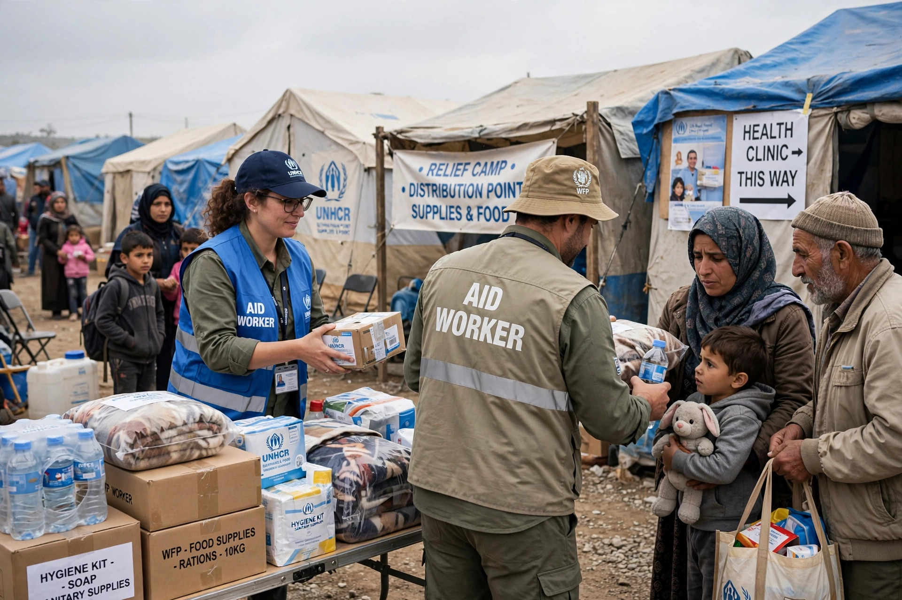

From Wikipedia, the free encyclopedia

Humanitarian intervention is the use or threat of military force by a state or group of states across another state's borders, primarily motivated by an intent to end widespread human-rights violations — such as mass killing or ethnic cleansing — occurring there. It is among the most contested questions in international law, because the UN Charter prohibits the use of force against the territorial integrity of states while simultaneously committing members to protect human rights.
Nineteenth-century precedents, such as European intervention in Ottoman Greece (1827), were invoked by later theorists. During the Cold War, interventions with humanitarian effects — India's in East Pakistan (1971), Vietnam's overthrow of the Khmer Rouge (1978), Tanzania's in Uganda (1979) — were usually justified by their perpetrators on self-defence grounds. The post-Cold War period brought UN-authorised operations in northern Iraq (1991), Somalia (1992), and Haiti, and the unauthorised NATO bombing of Yugoslavia over Kosovo (1999), which an independent commission famously called "illegal but legitimate." The failure to act during the Rwandan genocide of 1994 remains the doctrine's defining counter-case.
Partly in response, the 2005 UN World Summit adopted the responsibility to protect (R2P): each state must protect its population from genocide, war crimes, ethnic cleansing, and crimes against humanity, and the international community may act, through the Security Council, when a state manifestly fails to do so. R2P was invoked for the 2011 Libya intervention, whose course — from civilian protection to regime change — deepened controversy and contributed to paralysis over Syria.
Supporters argue that sovereignty cannot shield mass atrocity; critics question interveners' motives, selectivity (why Kosovo or Libya but not other crises), and the risk that intervention worsens the suffering it aims to stop. Legal debate continues over whether any right of unilateral humanitarian intervention exists at all.
Command responsibility · Military alliance · Public diplomacy